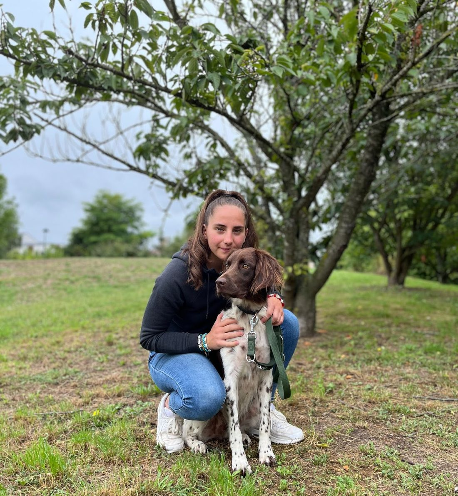

Balades, désensibilisation, obéissance : j'accompagne chaque binôme humain-chien vers une relation plus sereine — quel que soit l'âge, la race ou le tempérament de votre chien.

J'ai suivi une formation au lycée des Combrailles, en Auvergne, qui m'a permis d'obtenir le Brevet Professionnel d'Éducateur Canin (BPE).
Je travaille avec tous les chiens, quels que soient leur âge, leur race ou leur tempérament : tous sont les bienvenus. Ma méthode repose sur la recherche de l'équilibre optimal, autant pour votre chien que pour vous, en m'adaptant à ses besoins spécifiques et à vos attentes.
Toutes les séances individuelles se déroulent en extérieur, dans un lieu choisi selon vos préférences et celles de votre chien.
Le premier échange permet de faire connaissance et de définir ensemble les objectifs les plus adaptés à votre chien. Écrivez ou appelez directement, je reviens vers vous rapidement.
Intervention dans le 95, le 92 et le 78